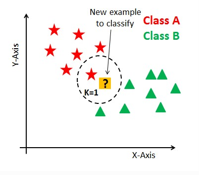

O algoritmo KNN (K Nearest Neighbor) é um dos algoritmos mais utilizados em Machine Learning e também um dos mais simplistas, analisando seu processo de cálculo. Este algoritmo pode ser aplicado em diversos segmentos de negócio, logo também se aplica em diversos problemas como finanças, saúde, ciência política, reconhecimento de imagem e reconhecimento de vídeos. O que acho mais fantástico neste algoritmo é a possibilidade de utilização do mesmo tanto para classificação quanto para regressão. Na classificação a máquina irá dizer a que grupo determinado registro faz parte, dentro obviamente de um contexto de negócio. Já a regressão irá nos fornecer um número/valor, por exemplo o valor de mercado de uma determinada casa que irá ser colocada a venda. Para ambos os casos o algoritmo irá analisar diversas features (Colunas com dados, as quais geraram informação).
O KNN é um algoritmo não pramétrico, aonde a estrutura do modelo será determinada pelo dataset utilizado. Este algoritmo também é conhecido como de aprendizado lento ou melhor dizendo, é um algoritmo preguiçoso, o termo certo é “lazy”. Os algoritmos do tipo lazy, não necessitam de dados de treinamento para se gerar o modelo, o que diminui em partes o processo inicial, mas em contrapartida gerará uma necessidade de analise posterior mais apurada. No caso de algoritmos que não necessitam de treinamento, todos os dados obtidos no dataset serão utilizados na fase de teste, resultando em um treinamento muito rápido e em um teste e validação lentos, momento o qual necessitamos estar bem atentos aos resultados gerados.
Neste algoritmo possuímos uma variável chamada de K, a qual é parte do nome do modelo e também o principal parâmetro a ser selecionado. Este parâmetro direcionará a quantidade de vizinhos (neighborn em inglês). Em casos de modelos binários, aonde possuímos apenas duas classes, em geral aplicasse valores ímpares a K, mas lembre que cada caso é um caso, “No free lunch”. Imagine que temos um valor P1 o qual queremos predizer, entre um grupo de duas classes aonde o valor atribuído a K foi 1 (K=1), primeiro iremos identificar o ponto mais próximo a ele e depois qual a label que o identifica. 
O KNN pode ser usado para problemas de regressão e classificação. Porem a ideia principal do KNN é determinar o rótulo de classificação de uma amostra baseado nas amostras vizinhas advindas de um conjunto de treinamento.
© Obrigado por ler.| By Yussuf Gabriel | Implantação de Sistemas.